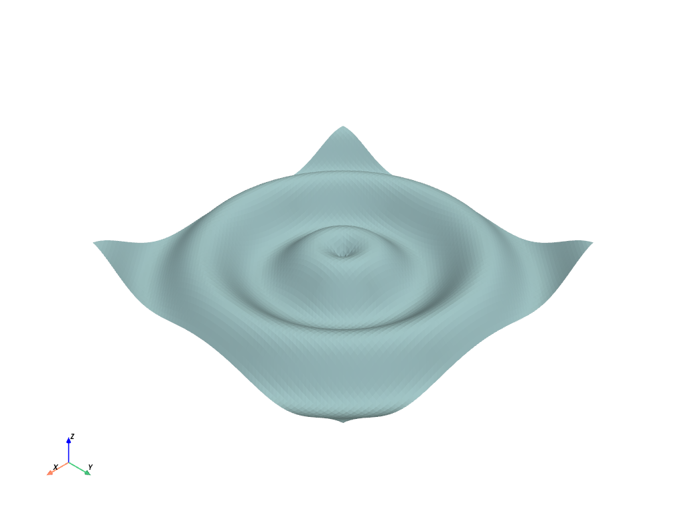
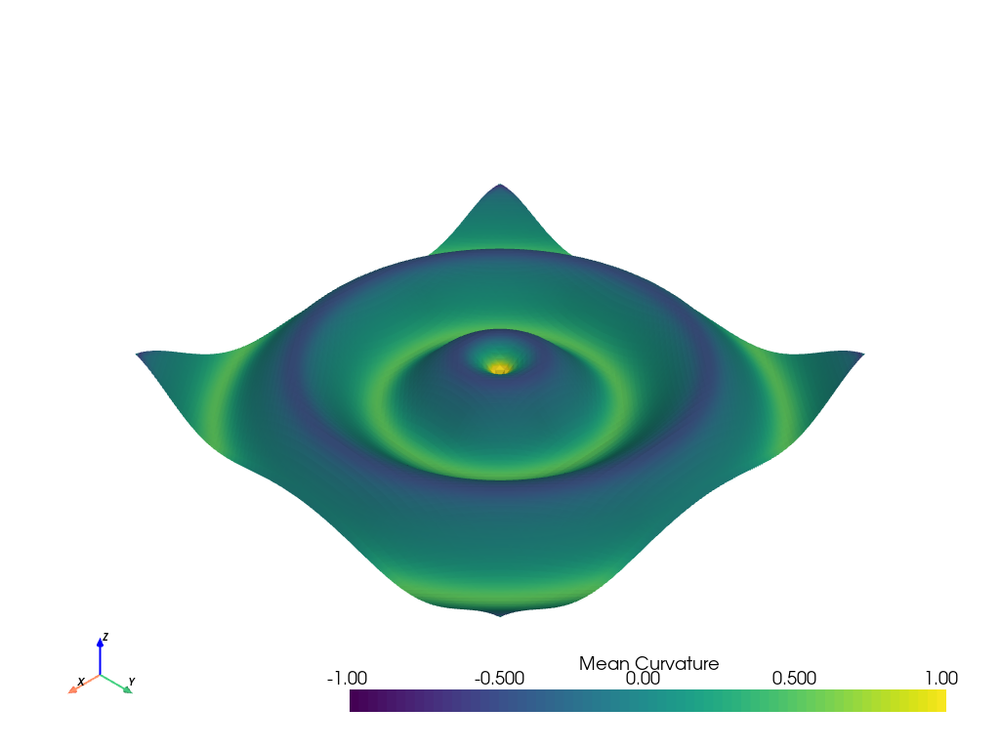
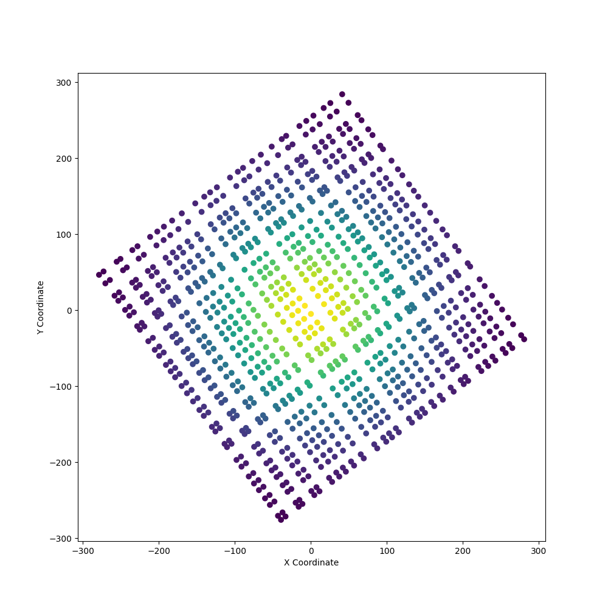
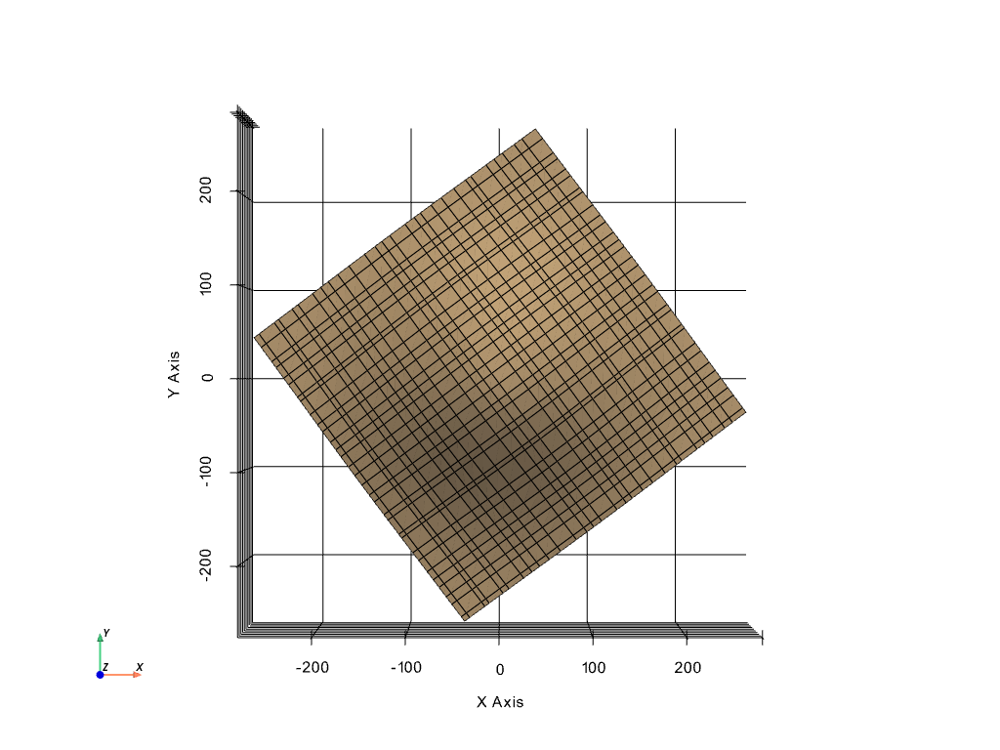
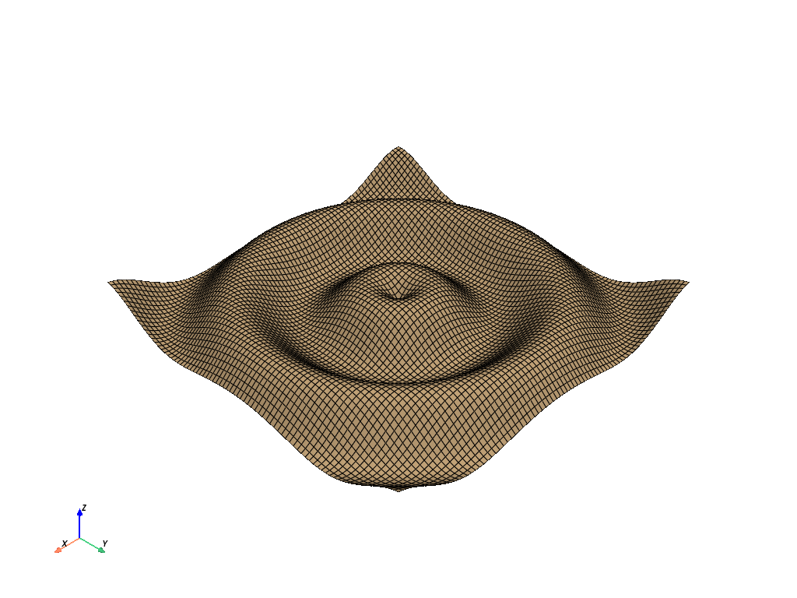
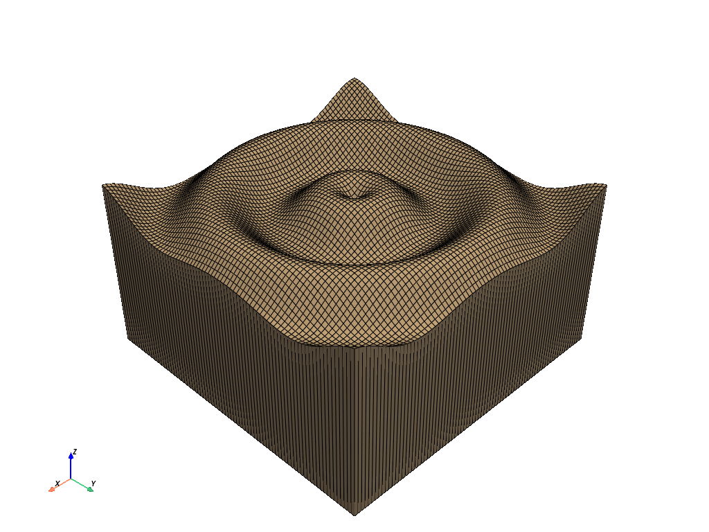

注釈
ここ をクリックすると完全なサンプルコードをダウンロードできます．
構造化サーフェスを作成する#
NumPy配列からStructuredGrid表面を作成します
import numpy as np
import pyvista as pv
from pyvista import examples
NumPyメッシュグリッドから#
NumPyを使用した単純なメッシュグリッドの作成
ここでNumPyメッシュグリッドをPyVistaに渡します．

# Plot mean curvature as well
grid.plot_curvature(clim=[-1, 1])

このモジュールでは，構造化されたグリッドの生成を1行で行い，生成されたサーフェスのポイントにNumPy配列としてアクセスできます:
grid.points
出力:
pyvista_ndarray([[-10. , -10. , 0.99998766],
[-10. , -9.75 , 0.98546793],
[-10. , -9.5 , 0.9413954 ],
...,
[ 9.75 , 9.25 , 0.76645876],
[ 9.75 , 9.5 , 0.86571785],
[ 9.75 , 9.75 , 0.93985707]])
XYZ点から#
多くの場合，単純な表形式で座標(XYZ点)のセットが与えられ，その中には，所有するノード間にグリッドを構築できるような構造が存在します．すばらしい例は， pyvista-support#16 にあり，デカルト参照フレームから回転される構造化グリッドは，単にXYZ点として与えられる．このような場合，グリッドを復元するために必要なものは，グリッドの寸法(nx x ny x nz)と，座標が適切に順序付けられていることだけです．
この例では，小さなデータセットを作成し，デカルト参照フレームに直交しないように座標を回転します．
def make_point_set():
"""Ignore the contents of this function. Just know that it returns an
n by 3 numpy array of structured coordinates."""
n, m = 29, 32
x = np.linspace(-200, 200, num=n) + np.random.uniform(-5, 5, size=n)
y = np.linspace(-200, 200, num=m) + np.random.uniform(-5, 5, size=m)
xx, yy = np.meshgrid(x, y)
A, b = 100, 100
zz = A * np.exp(-0.5 * ((xx / b) ** 2.0 + (yy / b) ** 2.0))
points = np.c_[xx.reshape(-1), yy.reshape(-1), zz.reshape(-1)]
foo = pv.PolyData(points)
foo.rotate_z(36.6, inplace=True)
return foo.points
# Get the points as a 2D NumPy array (N by 3)
points = make_point_set()
points[0:5, :]
出力:
pyvista_ndarray([[ -39.31202996, -275.97356919, 2.05407958],
[ -33.36637745, -271.55793795, 2.36864662],
[ -16.09983639, -258.73467289, 3.47303344],
[ -11.13046394, -255.0440912 , 3.84433794],
[ 4.5246666 , -243.4175652 , 5.16311977]])
ここで，上記の(n x 3インチ) NumPy配列がXYZ点の3列のファイルから取得した座標であると仮定します．
単にこれらの点が作るグリッドの寸法を回復する必要があり，それから pyvista.StructuredGrid メッシュを生成することができます．
ポイントをプレビューして，処理対象を確認します:
import matplotlib.pyplot as plt
plt.figure(figsize=(10, 10))
plt.scatter(points[:, 0], points[:, 1], c=points[:, 2])
plt.axis("image")
plt.xlabel("X Coordinate")
plt.ylabel("Y Coordinate")
plt.show()

上の図では，点への継承構造を確認できるため，点を構造化グリッドとして接続できます．私たちが知る必要があるのは，存在するグリッドの寸法だけです．この場合，(このデータセットは)寸法が [29, 32, 1] であることはわかっていますが，あなたはポイントセットの寸法を知らないかもしれません．構造化グリッドの次元性を確認するには，次のような方法があります:
点セットのエッジに沿った節点の手動カウント
主成分分析のような手法を用いてデータセットから回転を取り除き，新しいデータの各軸に沿った固有の値をカウントする;y投影データセット．
# Once you've figured out your grid's dimensions, simple create the
# :class:`pyvista.StructuredGrid` as follows:
mesh = pv.StructuredGrid()
# Set the coordinates from the numpy array
mesh.points = points
# set the dimensions
mesh.dimensions = [29, 32, 1]
# and then inspect it!
mesh.plot(show_edges=True, show_grid=True, cpos="xy")

2 D構造グリッドを3 Dに拡張します#
A 2 D pyvista.StructuredGrid のメッシュは，3 Dメッシュに拡張できます．これは，地球科学の研究アプリケーションでメッシュに沿った地形を作成する場合に非常に適しています．
たとえば，地形サーフェスの pyvista.StructuredGrid を作成し，そのサーフェスをいくつかの異なるレベルまで延長し，各 "レベル" を接続して，メッシュに沿って3 D地形を作成できます．
まず簡単な例として，ウェーブメッシュを3 Dに拡張します．
struct = examples.load_structured()
struct.plot(show_edges=True)

top = struct.points.copy()
bottom = struct.points.copy()
bottom[:, -1] = -10.0 # Wherever you want the plane
vol = pv.StructuredGrid()
vol.points = np.vstack((top, bottom))
vol.dimensions = [*struct.dimensions[0:2], 2]
vol.plot(show_edges=True)

Total running time of the script: ( 0 minutes 2.137 seconds)